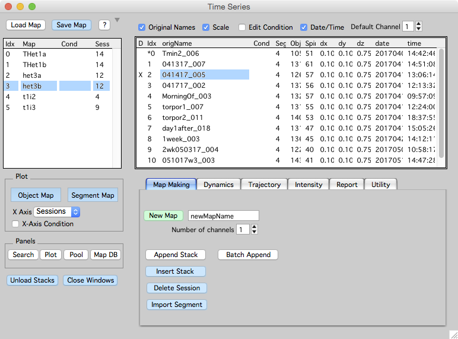
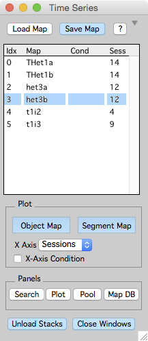
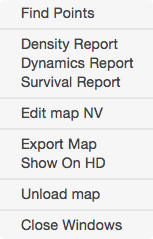
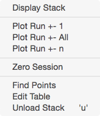

Time Series Panel
The Map Manager time-series panel provides an interface to load, save and browse Map Manager time-series (maps). Open the time-series panel using the menu ‘MapManager - Time Series’
Loaded maps are listed on the left and when a map is selected, its time-points (stacks) are listed on the right.


- Load Map. Load a map from the hard-drive.
- Save Map. Save selected map to hard-drive. By default, map manager saves only parts of the map it thinks are dirty. Ctrl+click will save the entire map.
- ?. Open the online Map Manager documentation.
Plot
- Object Map. Open a map plot. For spines, this will plot the position of each spine along its dendritic segment versus time-points (Sessions). For other annotations, this will plot annotations in their creation order. In both cases, these plots are crucial tools to visualize annotation dynamics.
- Segment Map. Open a map plot showing the segments within each session and the connectivity of segments across sessions. This is only for spine annotations that have segment tracings.
- X Axis. Choose different X-Axis for Object and Segment map plots. Available X-Axis are:
- Sessions
- Datetime
- Days
- Hours
- Zero Sessions
- Zero Days
- Zero Hours
- X-Axis Condition.
Datetime, Days and Hours require stacks to have a date/time specified. A stacks date/time can be manually edited by turning on ‘Edit Date/Time’ in the Utility Tab. The X-Axis options ‘Zero Sessions’, ‘Zero Days’, ‘Zeros Hours’ use a session in the map as a zero timepoint. Specify this by right-clicking on a stack and selecting ‘Zero Session’. The zero session for a map will have a ‘*’ in its session list. Zero session is also used when plotting from time-series panel tabs including: Dynamics, Trajectory, and Intensity.
Panels
- Search. Open the search panel.
- Plot. Open the plot panel.
- Pool. Open the map pool panel.
- Map DB. Open a map database panel to quickly browse and load maps from hard-drive. No documentation yet.
Miscellaneous
- Unload Stacks. Unload all stacks in the selected map. Ctrl+click to unload all stacks in all open maps. Unloading a stack will unload the RAW IMAGE DATA. It DOES NOT unload the stack annotations or the map.
- Close Windows. Close all windows associated with the selected map.
Right-click on a map name in the list for a contextual menu.

- Find Points. Open find points panel.
- Density Report. Generate a density report for the map. See reports.
- Dynamics Report. Generate a dynamics report for the map. See reports.
- Survival Report. Generate a survival report for the map. See reports.
- Edit map NV. DO NOT USE, this shows a map as a text table.
- Export Map. DO NOT USE Exports a map to text files. Files are saved in the ‘export/’ folder.
- Show on HDD. Shows the hard-drive folder where the map is saved.
- Unload map. Close a map, removing all associated images and analysis from Igor memory.
- Close Windows. Close all open windows associated with a map.
Right-click on a stack name in the list for a contextual menu.

- Display Stack. Display the stack in a stack window.
- Plot Run +-1. Plot a run of stacks from the selected stack.
- Plot Run +- All.
- Plot Run +- n.
- Zero Session. Set the selected stack to the zero session. Zero sessions are used when plotting a map with X-Axis set to ‘Zero Session’, ‘Zero Days’, and ‘Zero Hours’. The zero session will have an Asterix (*) before its session index in the list of sessions.
- Find Points. Open find points panel.
- Edit Table. Edit annotations in a stack as a text table. This is useful to copy and paste annotations for further analysis.
- Unload Stack. Unload the raw image data for a stack. Unloading a stack will unload the RAW IMAGE DATA. It DOES NOT unload the stack annotations or the map.